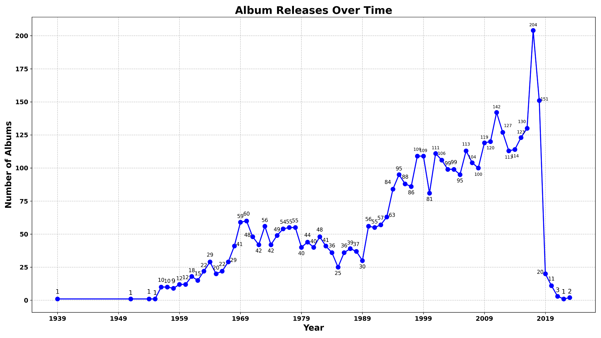
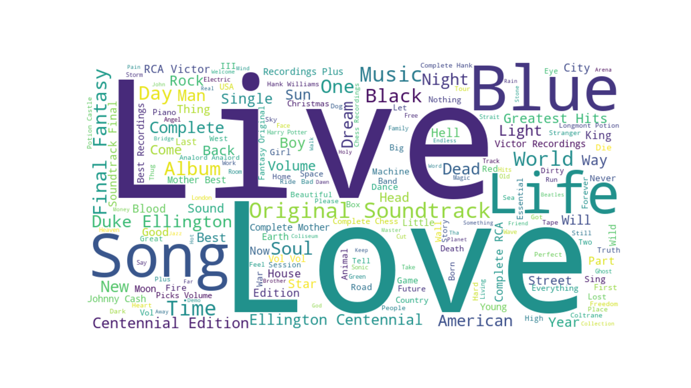

Plex Music Database Exploration
Part 1: The Graph
So, messing around with ChatGPT and using Python, I was able to start messing around with my Plex database and poking around inside of it.
There's so much data in there, and I'm not used to SQL queries, that shit is rough, but luckily ChatGPT was able to guide my ass through it all. Now, of course, I do have a Bachelor's degree in programming, so I know what I want to do and how to lay out the path to get there, just not exactly how to go about doing it, and that's where the AI comes in.
One of the first data visualizations that I wanted was to chart how many albums I have in each particular year, so I could identify gaps in my library, and know where to focus new music collection efforts.
So, let's take a look at that, shall we?

Now this is what I'm talking about lol, look at all that beautiful data.
Each point on the graph represents a specific year, as we can see on the X portion of the graph at the bottom. The number next to the point represents how many albums in my collection were released in that year, as we can see on the Y portion of the graph to the left.
So, as we can see, my collection skews heavily towards music produced in 1995 or later. This makes sense for a couple reasons. For one, that represents the portion of time where I've been alive and over the age of 5, but it also represents the era where CD re-releases, best of compilations, etc. started to come out in droves for older material.
However, even taking those things into account, we can see there is definitely a discrepancy for pre 90s music.
Looking closer at the data before the 90s, we can identify a lot of room for improvement in a couple key decades.
The 50s were obviously a key early era for music, however as we'll see later in the blog, it wasn't as easy to get info on this decade.
Moving to the 60s though, we can see I am severely lacking until the last couple years, so searching for more early-mid 60s music is a top priority.
In the 70s and 80s, things bounce around a lot depending on the year, and ultimately trend downwards through to the end of the 80s. I would personally like to see those numbers brought up way higher, closer to the mid-late 90s trend line.
Then of course, moving past the 90s, we see the 2000s, which is also a huge decade. Again, I think it's mostly inflated due to re-releases, but it's hard to tell because I also do have a ton of albums from that era.
Then in the 2010s we see the upward trajectory just continue and continue. My theory here is that this is when I was doing the most music collecting, with the peak being in 2017, where I definitely remember getting a lot of like "best album of the year" lists and just grabbing all of them.
Then we see things rapidly, and I do mean rapidly, decline. Once we get to 2019, that's when things pretty much came to a halt on new music collecting. So there's a lot of room for improvement to grab the last 5 years or so worth of things I've missed.
Part 2: The Search for More Music
I had now identified where I wanted to improve things, but how do I go about finding things to get? What am I just gunna sit there and spend days upon days endlessly searching for stuff from those decades? Without even a hint of where to start?
So, I started trying to think, what could I do here... What if I had like, some sort of big dataset of artists and albums to cross reference with my Plex database? Maybe like the Billboard charts? Things I don't have could be sorted out and added to a list. I could even set it then further sort it out and only include things that reached a certain height on the chart.
But how the hell am I going to go about doing that?
Oh wait, that's right. I've got ChatGPT on my side, remember?
So I ask Mr. GPT, can you find me a link to like, a big dataset of Billboard lists from throughout the years, showing the album charts and stuff? And it was like, well yeah.
So long story short, I now had access to a CSV file that contained all the Billboard 200 data since it's inception in the 60s. Remember how I said earlier that stuff from the 50s was harder to find info on? Yep, that's why.
Ok, now it was time to get to work here. Hey ChatGPT, go ahead and help me put together some Python scripts to do everything I want to do.
Long story short yet again, it worked.
Let's take a look at a sample from the final result:
| Artist | Album | Decade | Jose Feliciano | Feliciano/10 To 23 | 1960s |
|---|---|---|
| Jose Feliciano | Souled | 1960s |
| Judy Collins | Wildflowers | 1960s |
| Lou Rawls | Too Much! | 1960s |
| Lulu | To Sir With Love | 1960s |
| Mason Williams | The Mason Williams Phonograph Record | 1960s |
| Nancy Sinatra | Nancy & Lee | 1960s |
| Nancy Sinatra | Sugar | 1960s |
| O.C. Smith | Hickory Holler Revisited | 1960s |
As we can see, I now have a nicely organized CSV file that shows me albums I do not have in my Plex folder, as well as their artist, and which decade they came from. These albums have to have gotten to at least #25 on the Billboard 200 chart to have made it into the final list, though I do have other lists for the entire chart too.
However I was not done yet!
There is another way to go about this too, which is to instead consider the artists that I do not have many albums from, less than 3 in this case, since that accounts for artists where maybe I have a greatest hits and one other album, or a double disc greatest hits, and that's it.
So, I had another question for ChatGPT. Was it possible to create modified versions of these same scripts that would instead check for artists that were in my Plex database, and then do another check to make sure I only had 1 or 2 albums from them, and then do all this stuff to those instead?
We already know what ChatGPT said. Of course we can do that!
Let's take a look at that sample now:
| Artist | Album | Decade | Jackson Browne | Hold Out | 1980s |
|---|---|---|
| Jackson Browne | Lawyers In Love | 1980s |
| Jackson Browne | Lives In The Balance | 1980s |
| John Mellencamp | Big Daddy | 1980s |
| John Mellencamp | Scarecrow | 1980s |
| John Mellencamp | The Lonesome Jubilee | 1980s |
| John Mellencamp | Uh Huh | 1980s |
| LL Cool J | Bigger And Deffer | 1980s |
| LL Cool J | Walking With A Panther | 1980s |
| Lionel Richie | Can't Slow Down | 1980s |
| Lionel Richie | Dancing On The Ceiling | 1980s |
| Loverboy | Keep It Up | 1980s |
| Loverboy | Lovin' Every Minute Of It | 1980s |
| Night Ranger | 7 Wishes | 1980s |
Same logic being used to get these, but this time it's artists I already have whose discographies I can fill out with their most popular albums that I'm missing.
Part 3: The Next Steps
Now is when it's time to start hacking away. From my calculations, getting everything on the list into my collection in FLAC would take probably around 1TB of data, but I've got the space, I just need to take the time.
I'll be writing more blogs on my adventures poking around in my Plex database and seeing what kind of data and projects I can come up with around those. I'm hoping to dedicate one soon to more graph visualizations like the chart I had here.
For now, I'll leave you with this goofball-ass word cloud of all my album titles. Thanks for reading, see ya next time.
